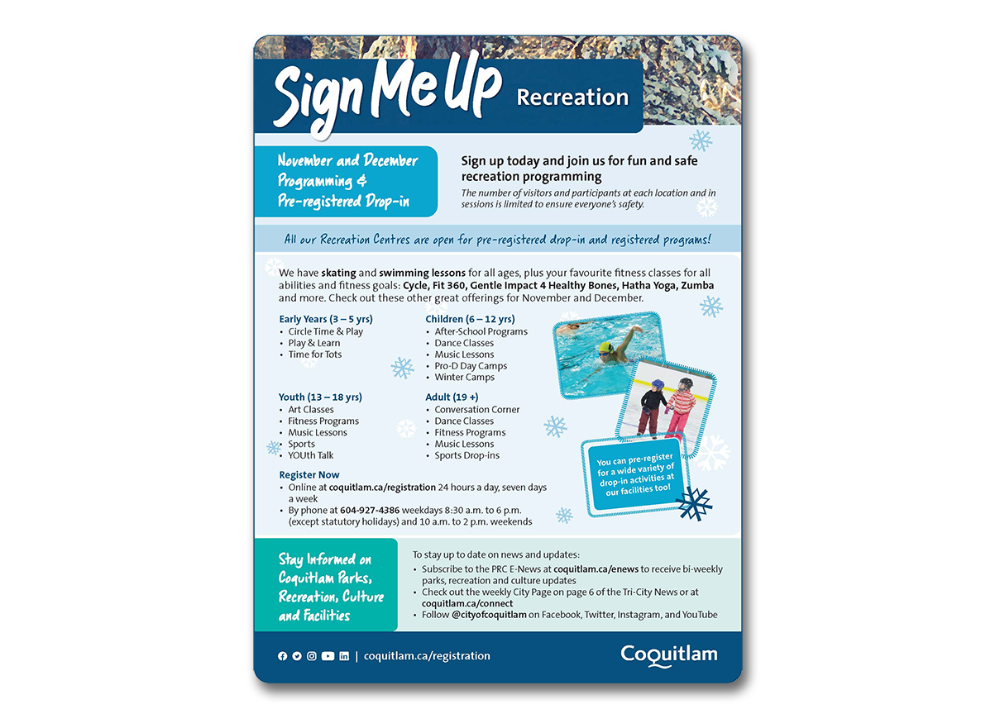
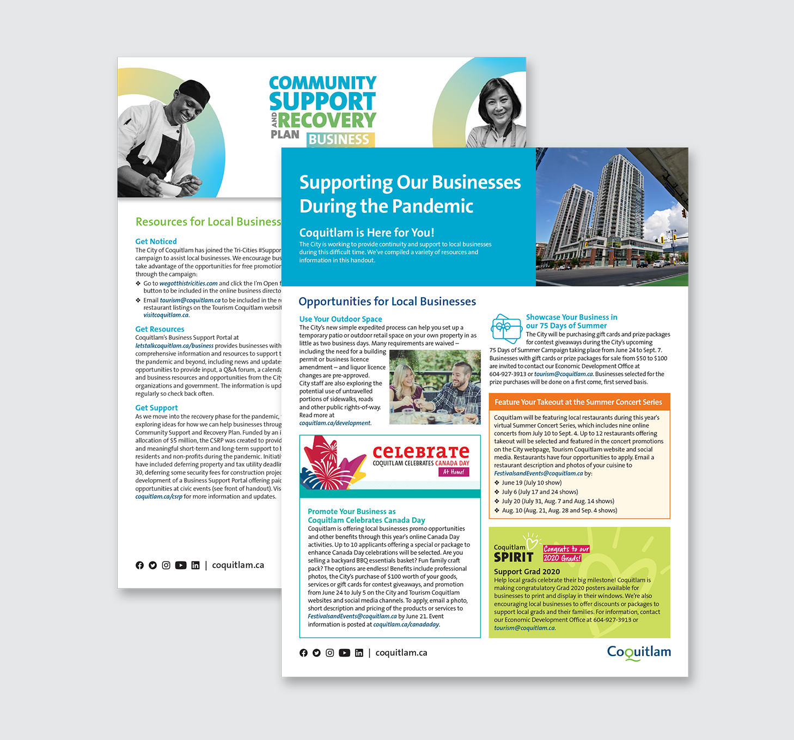
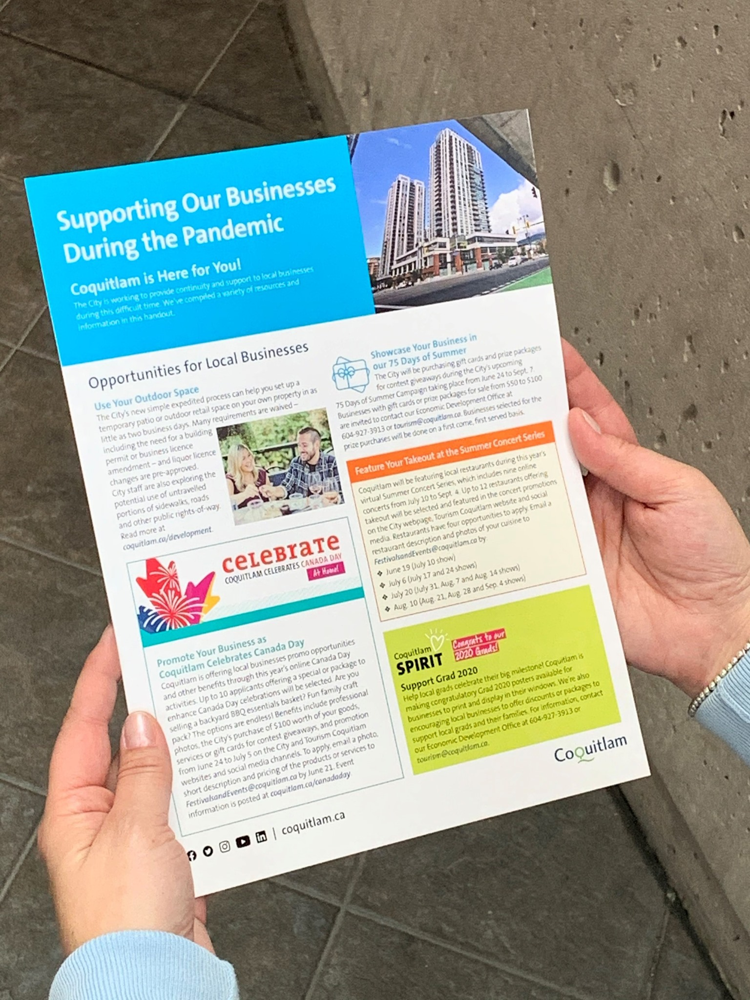
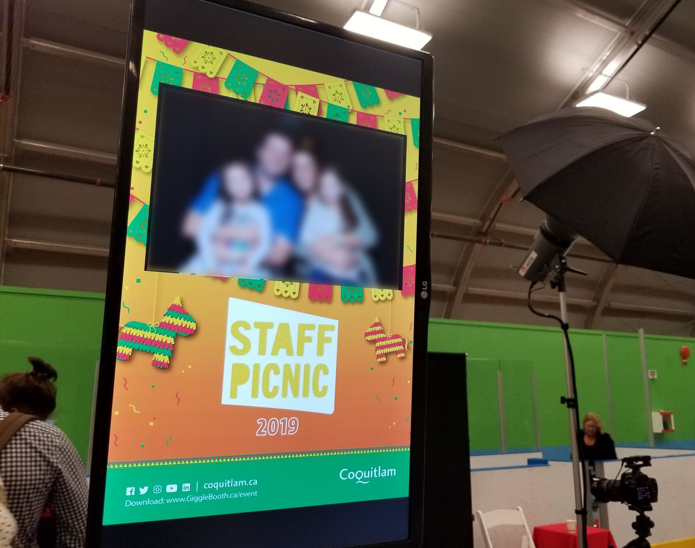
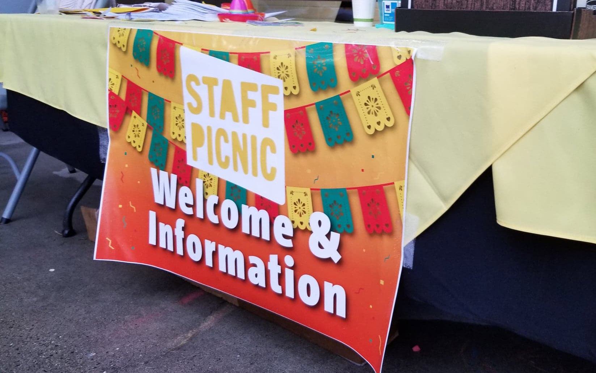

City of Coquitlam
As a Web and Graphics Technician at City of Coquitlam, I prepare print and digital graphic materials for various City departments. From corporate documents to community projects, I enjoy exploring possible creative soutions that tackle client requests, at the same time ensuring that all the materials are made within the graphic standards. Below are some of the examples I have been involved:
City Page
City Page is a weekly issue that features the latest updates and information from the City and runs in the Tri-City News. As a lead designer of this project, I work closely with the Communications Coordinator to gather required content, and prepare the print-ready file in a short deadline. Occasionally, we create takeovers with specific themes such as Holidays and Halloween features, and I aim to develop a content-heavy layout that contains all the necessary information while keeping the page visual appealing.
Below are a few examples of the special takeovers. Previous issues can be viewed here.
Community Projects
Promotional material that features the recreation programs available in various community facilities.
Economic Development Outreach Campaign

Annual Staff Picnic
 